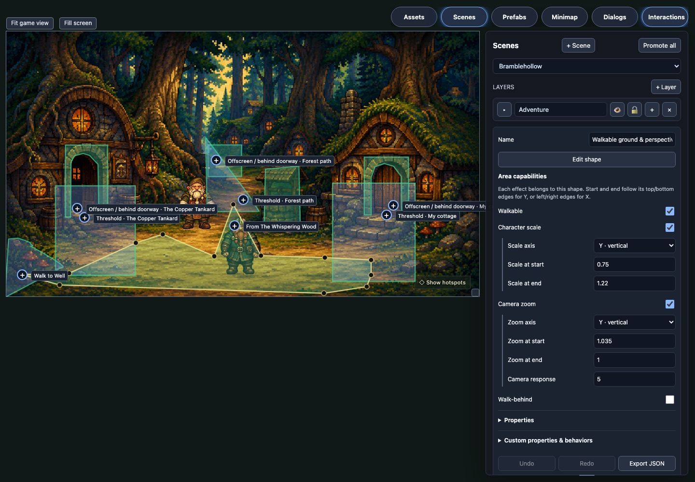

01 / SCENE DESIGNER
Shape the playable ground
Move a polygon edge, then walk the revised route without rebuilding the game.
Design inside the running game
Pointlesh keeps the engine small. Draw, adjust, generate and test in the game itself, where visual decisions get immediate feedback.

AI can now write much of a game's custom behavior. That changes what an engine needs to be. Pointlesh keeps the shared adventure runtime small and invests in the harder part: visual decisions you need to see and feel.
Drag a walkable boundary and immediately try the path. Choose an animation and watch it on the character. Change a conversation and play it in context. The designer is part of the game, so iteration stays close to the result.
See the edit-to-play loopThese are views of the real tools over the running demo. Step through each change to see the design decision and the game in one loop.
Move a polygon edge, then walk the revised route without rebuilding the game.
Start from a prompt and reference, inspect the frames, then try the selected animation on the live character.
Find a target in the matrix, set its response and try it immediately in the room.
Edit the branching choices and linked voice lines, then hear them in the scene.
Explore how Pointlesh and its companion libraries let you edit scenes, assets, dialogue and interactions where they play.
6 in-game design tools
Pointlesh supplies the small set of adventure primitives worth sharing. AI Assets, Scene Designer and Dialog Designer bring their own authoring tools into the running game. Custom mechanics stay in TypeScript.
A small common runtime for movement, interactions and saves, plus in-game prefab and interaction editors.
Explore repository ↗ 02 / ASSETSCreate and refine images, animations, sound, and voices with versions you can choose and promote.
Explore library ↗ 03 / WORLDShape rooms with vector areas, reusable prefabs, and direct manipulation on the canvas.
Explore library ↗ 04 / STORYAuthor branching conversations and connect spoken lines to the characters who say them.
Explore library ↗Try the loop yourself
Play the demo, or open its designer and explore the same rooms with their scenes, assets and interactions exposed.